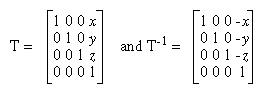
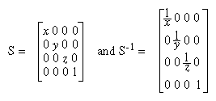
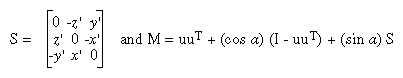
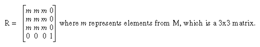
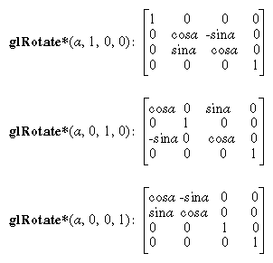
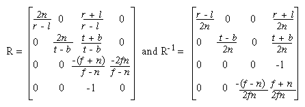
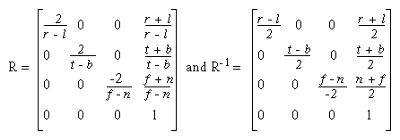

This appendix presents a brief discussion of homogeneous coordinates. It also lists the form of the transformation matrices used for rotation, scaling, translation, perspective projection, and orthographic projection. These topics are introduced and discussed in Chapter 3. For a more detailed discussion of these subjects, see almost any book on three-dimensional computer graphics - for example, Computer Graphics: Principles and Practice by Foley, van Dam, Feiner, and Hughes (Reading, MA: Addison-Wesley, 1990) - or a text on projective geometry - for example, The Real Projective Plane, by H. S. M. Coxeter, 2nd ed. (Cambridge: Cambridge University Press, 1961). In the discussion that follows, the term homogeneous coordinates always means three-dimensional homogeneous coordinates, although projective geometries exist for all dimensions.
Homogeneous Coordinates
OpenGL commands usually deal with two- and three-dimensional vertices, but in fact all are treated internally as three-dimensional homogeneous vertices comprising four coordinates. Every column vector (x, y, z, w)T represents a homogeneous vertex if at least one of its elements is nonzero. If the real number a is nonzero, then (x, y, z, w)T and (ax, ay, az, aw)T represent the same homogeneous vertex. (This is just like fractions: x/y = (ax)/(ay).) A three-dimensional euclidean space point (x, y, z)T becomes the homogeneous vertex with coordinates (x, y, z, 1.0)T, and the two-dimensional euclidean point (x, y)T becomes (x, y, 0.0, 1.0)T.
As long as w is nonzero, the homogeneous vertex (x, y, z, w)T corresponds to the three-dimensional point (x/w, y/w, z/w)T. If w = 0.0, it corresponds to no euclidean point, but rather to some idealized "point at infinity." To understand this point at infinity, consider the point (1, 2, 0, 0), and note that the sequence of points (1, 2, 0, 1), (1, 2, 0, 0.01), and (1, 2.0, 0.0, 0.0001), corresponds to the euclidean points (1, 2), (100, 200), and (10000, 20000). This sequence represents points rapidly moving toward infinity along the line 2x = y. Thus, you can think of (1, 2, 0, 0) as the point at infinity in the direction of that line.
Note: OpenGL might not handle homogeneous clip coordinates with w < 0 correctly. To be sure that your code is portable to all OpenGL systems, use only nonnegative w values.
Transforming Vertices
Vertex transformations (such as rotations, translations, scaling, and shearing) and projections (such as perspective and orthographic) can all be represented by applying an appropriate 4 ´
4 matrix to the coordinates representing the vertex. If v represents a homogeneous vertex and M is a 4 ´
4 transformation matrix, then Mv is the image of v under the transformation by M. (In computer-graphics applications, the transformations used are usually nonsingular - in other words, the matrix M can be inverted. This isn't required, but some problems arise with nonsingular transformations.)
After transformation, all transformed vertices are clipped so that x, y, and z are in the range [-w, w] (assuming w > 0). Note that this range corresponds in euclidean space to [-1.0, 1.0].
Transforming Normals
Normal vectors aren't transformed in the same way as vertices or position vectors. Mathematically, it's better to think of normal vectors not as vectors, but as planes perpendicular to those vectors. Then, the transformation rules for normal vectors are described by the transformation rules for perpendicular planes.
A homogeneous plane is denoted by the row vector (a, b, c, d), where at least one of a, b, c, or d is nonzero. If q is a nonzero real number, then (a, b, c, d) and (qa, qb, qc, qd) represent the same plane. A point (x, y, z, w)T is on the plane (a, b, c, d) if ax+by+cz+dw = 0. (If w = 1, this is the standard description of a euclidean plane.) In order for (a, b, c, d) to represent a euclidean plane, at least one of a, b, or c must be nonzero. If they're all zero, then (0, 0, 0, d) represents the "plane at infinity," which contains all the "points at infinity."
If p is a homogeneous plane and v is a homogeneous vertex, then the statement "v lies on plane p" is written mathematically as pv = 0, where pv is normal matrix multiplication. If M is a nonsingular vertex transformation (that is, a 4 ´
4 matrix that has an inverse M-1), then pv = 0 is equivalent to pM-1Mv = 0, so Mv lies on the plane pM-1. Thus, pM-1 is the image of the plane under the vertex transformation M.
If you like to think of normal vectors as vectors instead of as the planes perpendicular to them, let v and n be vectors such that v is perpendicular to n. Then, nTv = 0. Thus, for an arbitrary nonsingular transformation M, nTM-1Mv = 0, which means that nTM-1 is the transpose of the transformed normal vector. Thus, the transformed normal vector is (M-1)Tn. In other words, normal vectors are transformed by the inverse transpose of the transformation that transforms points. Whew!
Transformation Matrices
Although any nonsingular matrix M represents a valid projective transformation, a few special matrices are particularly useful. These matrices are listed in the following subsections.
Translation
The call glTranslate*(x, y, z) generates T, where

Scaling
The call glScale*(x, y, z) generates S, where

Notice that S-1 is defined only if x, y, and z are all nonzero.
Rotation
The call glRotate*(a, x, y, z) generates R as follows:
Let v = (x, y, z)T, and u = v/||v|| = (x', y', z')T.
Also let

Then

The R matrix is always defined. If x=y=z=0, then R is the identity matrix. You can obtain the inverse of R, R-1, by substituting - &agr; for a, or by transposition.
The glRotate*() command generates a matrix for rotation about an arbitrary axis. Often, you're rotating about one of the coordinate axes; the corresponding matrices are as follows:

As before, the inverses are obtained by transposition.
Perspective Projection
The call glFrustum(l, r, b, t, n, f) generates R, where

R is defined as long as l ´
r, t ´
b, and n ´
f.
Orthographic Projection
The call glOrtho(l, r, b, t, n, f ) generates R, where

R is defined as long as l ´
r, t ´
b, and n ´
f.